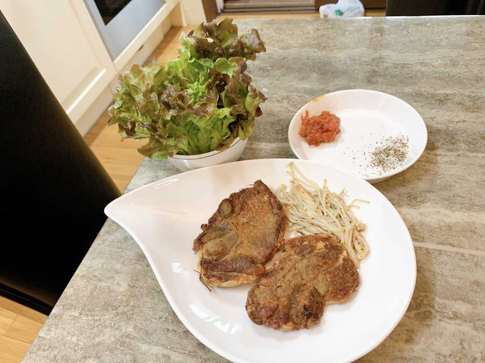
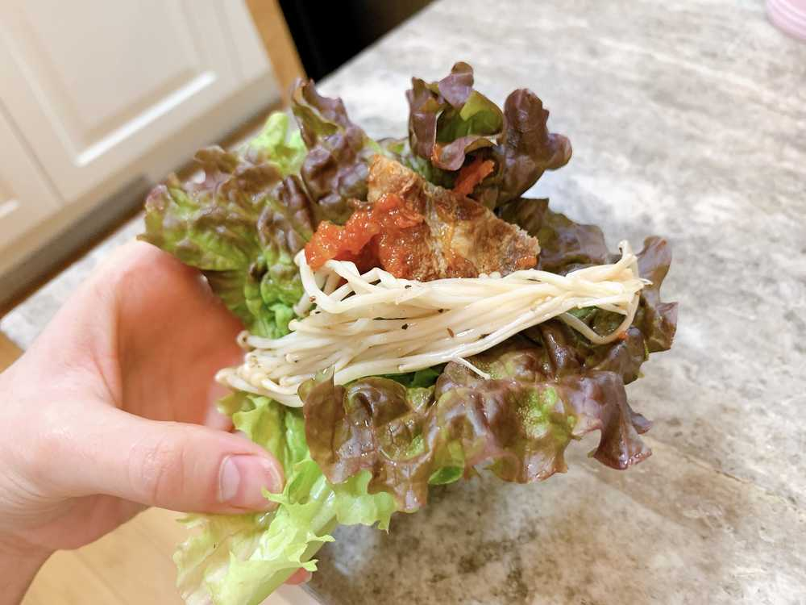

お肉食べた🤤
ひいだよ🍓

じゃーん🤗
上手でしょ！！！
撮るのも焼くのも！！笑
フライパンではなく
ノンフライヤーで焼いてみました🥩
豚肉だよ〜🐖
余分な油が落ちていつもより
ヘルシーに食べられた気分🤩笑
美味しかったなあ〜😊
キノコも美味しかった🍄
キノコはフライパンでやったけど
かなり美味しく焼けた✨
最初お肉と一緒に焼いたら
こげこげになっちゃったの🤭💦笑
それも美味しかったけどね〜
夜も食べたい🥩🥩🥩
そしてラジオの収録してきました📻
今日めっちゃ噛みまくったㅋㅋㅋㅋㅋ
FM栃木さんへ
今回は噛みすぎたので編集大変かもしれません
ごめんなさい。。
ひいより
明日のラジオも楽しみにしててね〜ㅎㅎㅎ
ではまたっ
드디어!!
저도 고기 먹었어요🥺
목살~🥩🥩🥩
라디오 녹음 끝나자마자 마트에 가서
상추랑 버섯을 사왔어요ㅎㅎㅎ
에어프라이어에 넣고 구웠어요!!
단백하고(?) 맛있었어요:)
기름이 많이 없는 느낌??
저녁에도 먹고 싶다🤩
오늘의 TMI💡
드디어 드디어!!!!
저도 벛꽃을 봤어요😳😳😳😳
너무 예뻤더라.....
오늘 날씨가 좋아서 산책을 했는데 그때 봤어요!!
제가 좋아하는 벛꽃을 볼 수 있어서
행복했어요😇
사진도 찍었으니까 이따가 올릴게요😆👍🏻

こうやって包んで食べるの最高👍🏻
짱 맛있었어요😍
ばいばーい👋🏻
ひいまる